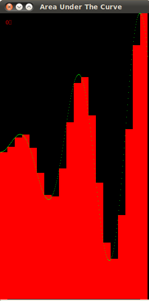

Computing Area Under the Curve¶
The code that illustrates the finding of the area under the curve using parallel computing and/or distributed processing consists of a main .c file and several .h files. The files are as follows:
- area.c - contains the main function of the program
- area.h - performs the important calculations and calls other drawing routines
- structs.h - contains general information of some important structs and functions used
- Xarea.h - contains all functions that call X windowing drawing routines
- colors.h - contain coloring functions that call X drawing routines
- MPEarea.h - contains all functions that call the MPE drawing routines
One of the main concerns of this program is how to split up the region we are interested in computing among the processing units, based on how many nodes and/or threads are to be used and the number of rectangles specified. A serial version of the program computes the areas of each rectangle one by one, stores the areas and finally sums the stored areas up. The following image shows the effect of computing this problem in a serial fashion:
In a parallel version, the same steps are followed, except each process or thread deals with a smaller number of rectangles. Each thread or sum keeps a sum of the areas of the rectangles they were responsible for and this value is private to this process. In the final step, each process communicates its private sum to the master process which then finally sums all the partial sums together for a final output. This is called reduction - we are reducing all the individual sums to a final one.
When using MPI, one of the first main steps to do is to distribute a certain amount of rectangles to each node. If MPI is not used then the head node gets all the rectangles. The following code extract demonstrates how this is done.
/***************************************************************************
* Set up all the information processes/threads need to know about rectangles *
***************************************************************************/
void setup_rectangles(struct area_t * area) {
struct curve_t * curve= &(area->curve);
struct rec_t * rect = &(area->rect);
struct display_t * d = &(area->d);
/* Calculate the overall width of the domain of the
* function and the width of a rectangle.*/
curve->width = curve->xright - curve->xleft;
rect->width = curve->width / rect->num_rect;
/* Calculate the number of rectangles for
* which the process is responsible. */
rect->private_num_rect = rect->num_rect / area->numProcs;
/* Calculate the left x-boundary of the process. */
curve->my_xleft = curve->xleft + area->rank*rect->private_num_rect*rect->width;
/*Add extra rectangles to the last process*/
if(area->rank == area->numProcs - 1){
rect->private_num_rect += rect->num_rect % area->numProcs;
}
}
The overall number of rectangles is divided by the number of processes. Note that if these numbers are evenly divisible, each process will acquire an equal sized subset of rectangles. In case they are not evenly divisible, then the last process will take on the remainder of the rectangles.
ACTIVITY 0 - Load Balancing¶
By dividing the rectangles in the way it was done above, we can see that the last process will always get an extra 0 through n-1 rectangles. For this particular problem being run on our particular hardware, this may not seem like a big issue, since the maximum number of extra rectangles the last process can be responsible is no more than 5. By running a small number of rectangles, however, we can notice how the last process will have a relatively large number of rectangles to deal with than the others. We say there is improper load balancing. In addition, suppose we are working on a much larger system that has thousands of cores or even more. This can pose a problem given that the largest amount of extra rectangles can be up to n-1. The first task geared towards improving this code would be to ensure for proper load balancing of the data among the processes.
The solution to this problem can be obtained by downloading area_load_balancing.tar.gz.
| Comments: | It is recommended that you create a folder called Area-under-curve, into which you will place any folders containing the activities. To compile this and all the other programs, download this Makefile and place it outside the folder(s) your actual program is in, that is in your Area-under-curve folder. |
|---|
ACTIVITY 1 - Reduction of Sum¶
In the following code excerpt we can see how the sum is computed using MPI_Reduction. This means that the head node will sum up all the partial sums from the other nodes.
/***************************************************************************
* Sum the areas of all rectangles*
***************************************************************************/
void sum_rectangles(struct area_t * area) {
struct rec_t * rect = &(area->rect);
/* Calculate the overall sum */
#ifdef _MPI
MPI_Reduce(&area->my_sum, &area->total_sum, 1, MPI_DOUBLE, MPI_SUM, 0, MPI_COMM_WORLD);
#else
area->total_sum = area->my_sum;
#endif
In case of a heterogeneous computing or OpenMP only version of this code each thread computes its partial sum and updates the my_sum variable in the main struct area. There is another way to make the summation more efficient when threads are involved. We can use OpenMP to perform a reduction on the partial sums of each thread. In case of a heterogeneous version, these partial sums will be then further reduced using MPI. Thus change the following for loop to perform OpenMP reduction.
/***************************************************************************
* Find boundaries of each rectangle and calculate the area for each*
***************************************************************************/
void get_rectangle_area(struct area_t * area) {
struct display_t * d = &(area->d);
struct rec_t * rect = &(area->rect);
struct curve_t * curve = &(area->curve);
int current_rectangle;
double current_left,current_height;
#ifdef OMP
#pragma omp parallel for private(current_rectangle, current_left, current_height)
#endif
for(current_rectangle = 0; current_rectangle < rect->private_num_rect; current_rectangle++)
{
/* Calculate the x-value of the left side of the rectangle */
current_left = curve->my_xleft + current_rectangle *rect->width;
/* Calculate the height of the rectangle */
current_height = FUNC(area, current_left);
/* Calculate the area of the rectangle and add it to the sum private to each process*/
area->my_sum += rect->width * current_height;
Leave the rest of the loop as is:
/*Draw the current rectangle*/
if(area->do_display){
if(area->circle){
current_left = curve->circle_my_xleft + current_rectangle*rect->circle_width;
current_height = scale_circle(current_left);
}
if(area->sin){
current_left = curve->sin_my_xleft + current_rectangle*rect->sin_width;
current_height = scale_sin(current_left);
}
draw_rectangle(area,current_left,current_height);
}
}
}
The solution to this problem can be obtained by downloading area_OpenMP_reduction.tar.gz.

{kind=link}